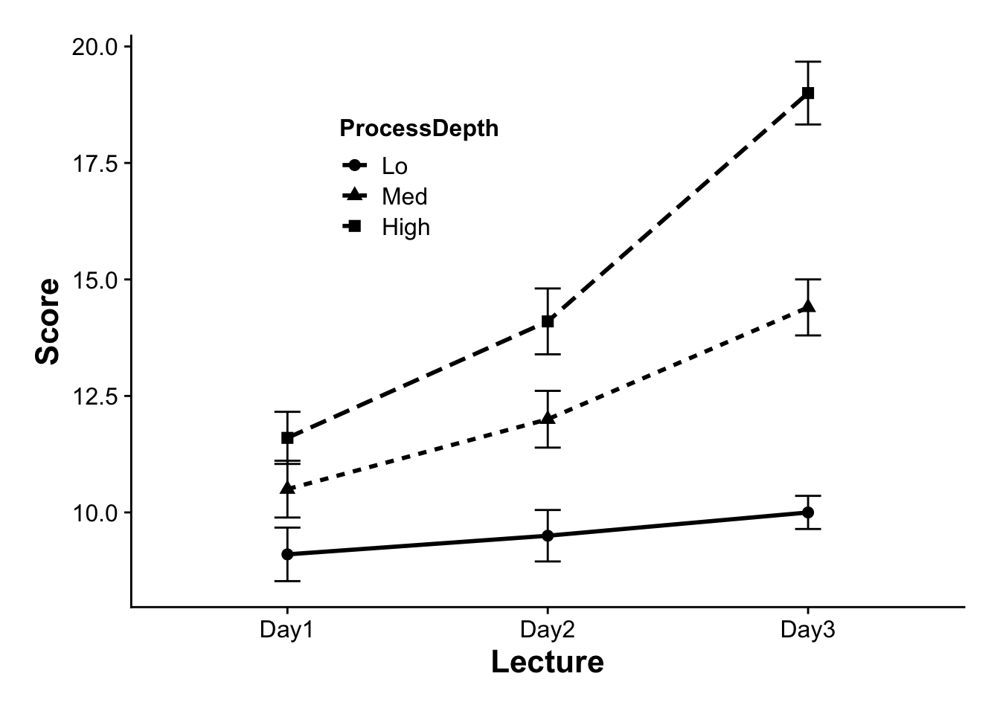

Let’s ramp-up the complexity. Here is a dataset testing Recall over three days as a function of depth of processing (Lo, Med, High). In this case we have two within factors.
Rows: 90 Columns: 4
── Column specification ────────────────────────────────────────────────────────
Delimiter: ","
chr (2): ProcessDepth, Day
dbl (2): Subject, Recalled
ℹ Use `spec()` to retrieve the full column specification for this data.
ℹ Specify the column types or set `show_col_types = FALSE` to quiet this message.
factorial_df
# A tibble: 90 × 4
Subject Recalled ProcessDepth Day
<dbl> <dbl> <chr> <chr>
1 1 14 High Day1
2 2 10 High Day1
3 3 13 High Day1
4 4 14 High Day1
5 5 12 High Day1
6 6 8 High Day1
7 7 13 High Day1
8 8 11 High Day1
9 9 9 High Day1
10 10 12 High Day1
# ℹ 80 more rows
One thing to note is that Subject is being treated as a <dbl> number. It should be treated as a factor.
Since I have two factors here, one strategy may be to facet my spaghetti plots. In this case I am creating seperate spaghetti plots for each level of ProcessDepth:
p<-ggplot(data =factorial_df, aes(x=Day, y=Recalled, group =Subject))+geom_point(aes(col=Subject))+geom_line(aes(col=Subject))+facet_wrap(~ProcessDepth)plotly::ggplotly(p)
FWIW, on thing that this plot has clued my in on is that the order of my Processing Depth levels is High, Lo, Med. I might actually want that to be Lo, Med, High:
p<-ggplot(data =factorial_df, aes(x=Day, y=Recalled, group =Subject))+geom_point(aes(col=Subject))+geom_line(aes(col=Subject))+facet_wrap(~ProcessDepth)plotly::ggplotly(p)
41.2.1.1 means plots
Again, we need to make the appropriate correction for our error bars. In this case the number of within groups is the number of cells that is formed by crossing Day (1,2,3) and Processing Depth (Lo, Med, Hi). As this is a 3 * 3 design there are 9 cells, or nWithinGroups=9. As before this is handled auto-magically in summarySEwithin2, or our custom function withinSummary
Warning: Using `size` aesthetic for lines was deprecated in ggplot2 3.4.0.
ℹ Please use `linewidth` instead.
show(p)

41.2.2 running the omnibus ANOVA:
omnibus_aov<-afex::aov_ez(id ="Subject", dv ="Recalled", data =factorial_df, between =NULL, within =c("ProcessDepth","Day"), type =3, return ="afex_aov", include_aov =TRUE, anova_table=list(es ="pes"))summary(omnibus_aov)
Warning in summary.Anova.mlm(object$Anova, multivariate = FALSE): HF eps > 1
treated as 1
Univariate Type III Repeated-Measures ANOVA Assuming Sphericity
Sum Sq num Df Error SS den Df F value Pr(>F)
(Intercept) 13493.4 1 41.067 9 2957.153 1.209e-12 ***
ProcessDepth 432.2 2 61.400 18 63.345 7.137e-09 ***
Day 254.5 2 95.733 18 23.925 8.521e-06 ***
ProcessDepth:Day 110.4 4 93.400 36 10.636 8.567e-06 ***
---
Signif. codes: 0 '***' 0.001 '**' 0.01 '*' 0.05 '.' 0.1 ' ' 1
Mauchly Tests for Sphericity
Test statistic p-value
ProcessDepth 0.94884 0.81054
Day 0.81573 0.44277
ProcessDepth:Day 0.22026 0.27277
Greenhouse-Geisser and Huynh-Feldt Corrections
for Departure from Sphericity
GG eps Pr(>F[GG])
ProcessDepth 0.95133 1.559e-08 ***
Day 0.84440 3.539e-05 ***
ProcessDepth:Day 0.71617 0.0001178 ***
---
Signif. codes: 0 '***' 0.001 '**' 0.01 '*' 0.05 '.' 0.1 ' ' 1
HF eps Pr(>F[HF])
ProcessDepth 1.199509 7.136593e-09
Day 1.018163 8.520701e-06
ProcessDepth:Day 1.085791 8.566883e-06
Here we have two main effects and an interaction. Let’s unpack the interaction by taking a look at whether Recall increases over successive days.
41.2.3 running the simple effects ANOVAs
41.2.3.1 Recommended method (assumed violation of spherecity)
The Cohen chapter assigned this week recommends that one avoid the use of pooled error terms when performing simple effects analysis of within-subjects ANOVA. This is definitely the case when the spherecity assumption is violated, but as a general rule, even when the assumption is not technically violated, deviations from spherecity can artificially inflate Type I error. So in this case, simple follow up ANOVAs that refer to their own error terms are justified. That said as Type I error goes down, Type II goes up. Something to consider.
One way to do this would be, as we have done in the past, separate out the data and run separate simple effects ANOVAs using emmeans. This time, we DO NOT use the error term from the omnibus ANOVA, we treat each simple effects ANOVA as self contained. This can be accomplished using joint_tests() from emmeans telling it how we want to separate our original model. As before, we need to add model="multivariate" to our call (this tells R to use the simple effects error term and not the omnibus).
Here I’m taking a look at the effect of Day on each level of Processing Depth. A better way of saying this is whether you see different rates of learning over Days depending on what level of Processing is involved.
joint_tests(omnibus_aov, by ="ProcessDepth", model="multivariate")
ProcessDepth = Lo:
model term df1 df2 F.ratio p.value
Day 2 9 1.487 0.2768
ProcessDepth = Med:
model term df1 df2 F.ratio p.value
Day 2 9 30.146 0.0001
ProcessDepth = High:
model term df1 df2 F.ratio p.value
Day 2 9 32.045 0.0001
41.2.3.2 Assuming spherecity
If we wanted to throw Cohen’s caution to the wind, we would simply run the simple effects tests with a univariate model. Note that this method attempts to deal with potential violations of our spherecity assumptions by using Satterthwaite degrees of freedom. Keep in mind, we are less protected from Type 1 error in this case.
joint_tests(omnibus_aov, by ="ProcessDepth", model="univariate")
ProcessDepth = Lo:
model term df1 df2 F.ratio p.value
Day 2 47.6 0.581 0.5635
ProcessDepth = Med:
model term df1 df2 F.ratio p.value
Day 2 47.6 11.049 0.0001
ProcessDepth = High:
model term df1 df2 F.ratio p.value
Day 2 47.6 40.457 <.0001
In both cases we find an effect for Day on the High and MedProcessDepth.
As a follow up we would run the pairwise tests. Here’s the multivariate method:
# multivariate methodemmeans(omnibus_aov, by ="ProcessDepth", specs =pairwise~Day, model="multivariate", adjust="tukey")
… To test this hypothesis we ran a 3 (Process Depth) × 3 (Day) repeated-measures ANOVA. Where there were violations of spherecity, we used Greenhouse-Geisser corrected degrees of freedom. This analysis revealed a significant interaction, \(F\)(2.86, 25.78) = 10.64, \(p\) < .001, \(\eta_p^2\) = .54. To test this interaction we ran seperate simple effects ANOVA for Day on each level of Process Depth. A simple effect for Day was found on High processing depth, \(F\)(2, 9) = 32.05, \(p\) < .001, where there were statistically significant increases in performance from each Day to the next (Tukey HSD, \(p\) < .05). A simple effect for Day was also found on Med processing depth, \(F\)(2, 9) = 30.15, \(p\) < .001. While scores increased across the 3 days, only Day 3 was significantly greater than the other two (\(p\)s < .05). No simple effect was observed for Day in the Lo processing depth condition.
See the next walkthrough for how to do this in SPSS.
Source Code
---title: "Factorial RM-ANOVA and simple effects"---Let's ramp-up the complexity. Here is a dataset testing Recall over three days as a function of depth of processing (Lo, Med, High). In this case we have two within factors.## loading in the necessary packages and data:```{r}pacman::p_load(tidyverse, afex, cowplot, emmeans)source("https://raw.githubusercontent.com/tehrandavis/graduate_statistics/main/custom_functions/withinSummary.R")factorial_df <-read_csv("https://raw.githubusercontent.com/tehrandavis/graduate_statistics/main/practice_datasets/withinEx3.csv")factorial_df```One thing to note is that **Subject** is being treated as a \<dbl\> number. It should be treated as a factor.```{r}factorial_df$Subject <-as.factor(factorial_df$Subject)```## plotting the data### individual subjects plots: SpaghettiSince I have two factors here, one strategy may be to **facet** my spaghetti plots. In this case I am creating seperate spaghetti plots for each level of **ProcessDepth:**```{r}p <-ggplot(data = factorial_df, aes(x=Day, y=Recalled, group = Subject)) +geom_point(aes(col=Subject)) +geom_line(aes(col=Subject)) +facet_wrap(~ProcessDepth)plotly::ggplotly(p)```FWIW, on thing that this plot has clued my in on is that the order of my **Processing Depth** levels is High, Lo, Med. I might actually want that to be Lo, Med, High:```{r}factorial_df$ProcessDepth <-fct_relevel(factorial_df$ProcessDepth, c("Lo","Med","High") ) ```and now re-plotting...```{r}p <-ggplot(data = factorial_df, aes(x=Day, y=Recalled, group = Subject)) +geom_point(aes(col=Subject)) +geom_line(aes(col=Subject)) +facet_wrap(~ProcessDepth)plotly::ggplotly(p)```#### means plotsAgain, we need to make the appropriate correction for our error bars. In this case the number of within groups is the number of cells that is formed by crossing Day (1,2,3) and Processing Depth (Lo, Med, Hi). As this is a 3 \* 3 design there are 9 cells, or `nWithinGroups=9`. As before this is handled auto-magically in `summarySEwithin2`, or our custom function `withinSummary````{r}descriptiveStats <-withinSummary(data=factorial_df,measurevar ="Recalled",withinvars =c("Day","ProcessDepth"),idvar ="Subject")p <-ggplot(descriptiveStats$Corrected, aes(x = Day,y = Recalled, group=ProcessDepth)) +geom_point(size=2.5, aes(shape = ProcessDepth)) +geom_line(size=1, aes(linetype=ProcessDepth)) +geom_errorbar(aes(ymin=Recalled-se, ymax=Recalled+se), width=0.1) +theme_cowplot() +theme(axis.title =element_text(size =16, face ="bold", lineheight = .55),axis.text =element_text(size =12),legend.title =element_text(size =12, face ="bold"),legend.position =c(.25,.75)) +scale_color_manual(values=c("black","grey50")) +xlab("Lecture") +ylab ("Score") +theme(plot.margin=unit(c(.25,.25,.25,.25),"in")) +# stack legend boxes horizontally:theme(legend.box ="horizontal")show(p)```### running the omnibus ANOVA:```{r}omnibus_aov <- afex::aov_ez(id ="Subject", dv ="Recalled", data = factorial_df,between =NULL,within =c("ProcessDepth","Day"),type =3, return ="afex_aov", include_aov =TRUE, anova_table=list(es ="pes"))summary(omnibus_aov)```Here we have two main effects and an interaction. Let's unpack the interaction by taking a look at whether `Recall` increases over successive days.### running the simple effects ANOVAs#### Recommended method (assumed violation of spherecity)The Cohen chapter assigned this week recommends that **one avoid the use of pooled error terms when performing simple effects analysis of within-subjects ANOVA**. This is definitely the case when the spherecity assumption is violated, but as a general rule, even when the assumption is not technically violated, deviations from spherecity can artificially inflate Type I error. So in this case, simple follow up ANOVAs that refer to their own error terms are justified. That said as Type I error goes down, Type II goes up. Something to consider.One way to do this would be, as we have done in the past, separate out the data and run separate simple effects ANOVAs using `emmeans`. **This time, we DO NOT use the error term from the omnibus ANOVA**, we treat each simple effects ANOVA as self contained. This can be accomplished using `joint_tests()` from `emmeans` telling it how we want to separate our original model. As before, we need to add `model="multivariate"` to our call (this tells `R` to use the simple effects error term and not the omnibus).Here I'm taking a look at the effect of Day on each level of Processing Depth. A better way of saying this is whether you see different rates of learning over Days depending on what level of Processing is involved.```{r}joint_tests(omnibus_aov, by ="ProcessDepth", model="multivariate")```#### Assuming spherecityIf we wanted to throw Cohen's caution to the wind, we would simply run the simple effects tests with a `univariate` model. Note that this method attempts to deal with potential violations of our spherecity assumptions by using Satterthwaite degrees of freedom. Keep in mind, we are less protected from Type 1 error in this case.```{r}joint_tests(omnibus_aov, by ="ProcessDepth", model="univariate")```In both cases we find an effect for `Day` on the `High` and `Med``ProcessDepth`.As a follow up we would run the pairwise tests. Here's the multivariate method:```{r}# multivariate methodemmeans(omnibus_aov, by ="ProcessDepth", specs = pairwise ~ Day, model="multivariate", adjust="tukey")```and the univariate (pooled error term):```{r}emmeans(omnibus_aov, by ="ProcessDepth", specs = pairwise ~ Day, model="univariate", adjust="tukey")```### Writing this up... To test this hypothesis we ran a 3 (Process Depth) × 3 (Day) repeated-measures ANOVA. Where there were violations of spherecity, we used Greenhouse-Geisser corrected degrees of freedom. This analysis revealed a significant interaction, $F$(2.86, 25.78) = 10.64, $p$ \< .001, $\eta_p^2$ = .54. To test this interaction we ran seperate simple effects ANOVA for Day on each level of Process Depth. A simple effect for Day was found on High processing depth, $F$(2, 9) = 32.05, $p$ \< .001, where there were statistically significant increases in performance from each Day to the next (Tukey HSD, $p$ \< .05). A simple effect for Day was also found on Med processing depth, $F$(2, 9) = 30.15, $p$ \< .001. While scores increased across the 3 days, only Day 3 was significantly greater than the other two ($p$s \< .05). No simple effect was observed for Day in the Lo processing depth condition.See the next walkthrough for how to do this in SPSS.